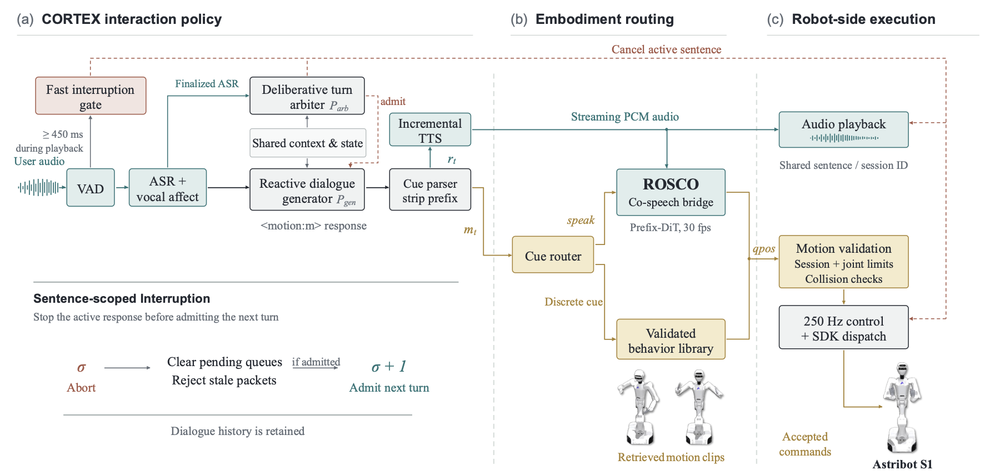

Abstract
Real-time embodied companion interaction requires a robot to infer user intent from streaming speech, generate timely responses, and execute expressive, interruptible motions. Existing systems typically decouple dialog orchestration from gesture synthesis, relying on offline motion generation from complete audio. This separation leaves open how a deployed robot can dynamically synchronize response content, prosodic timing, and physical safety under incremental inputs and uncertain turn boundaries.
We present MIRA, a unified framework for full-duplex embodied companion interaction. Given streaming user speech, dialogue history, and vocal affect, MIRA predicts both the response text and an explicit embodiment cue. Discrete social behaviors (e.g. listening, greeting) are mapped to validated robot trajectories, while open-ended speaking is paired with streaming, co-speech motion. This generative motion is governed by a predict-more-than-commit sliding window that provides temporal look-ahead for motion continuity while limiting physical commitment to a short, cancellable prefix. Crucially, we design CORTEX, a dual-timescale interaction policy that manages low-latency streaming and deliberative turn decisions, backed by a robot-side execution layer that enforces physical safety constraints at the control rate. We deploy MIRA on an Astribot S1 humanoid robot. Quantitative evaluations demonstrate competitive audio–motion alignment relative to state-of-the-art motion-generation baselines, while real-robot deployment measurements characterize streaming responsiveness and interruption handling.
Highlights
MIRA — Embodied interaction framework
Coordinates dialogue decisions, social behaviors, and streaming co-speech motion through an explicit embodiment-cue interface and shared response identity.
CORTEX — Interaction controller
Dual-timescale policy combining streaming response generation, deliberative turn admission, and local interruption handling, routing responses through the embodiment cue.
ROSCO — Robotic Streaming Co-speech Generator
A robot-native prefix-conditioned diffusion model for streaming audio-to-joint motion generation, guided by RHPC to separate motion prediction from incremental physical emission.
Physical deployment on Astribot S1
Validates motion quality, streaming performance, behavior coordination, and interruption handling in real-world human–robot interaction.
System Overview

Video
Discrete social behaviors on the Astribot S1 — greeting, listening, and expressive reactions executed from pre-validated action libraries.
Long Dialog
Real-time full-duplex interaction on the Astribot S1 — including streaming co-speech motion and user barge-in interruption.
BibTeX
@misc{mira2026, title={MIRA: Real-Time Full-Duplex Human--Robot Interaction for Embodied Companions}, author={Author1 and Author2 and Author3 and Author4}, affiliation={International Digital Economy Academy}, year={2026}, note={Project homepage: \url{https://your-username.github.io/MIRA}} }